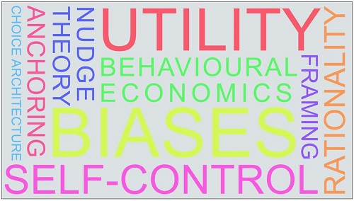
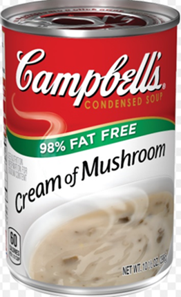
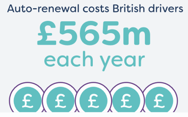
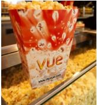
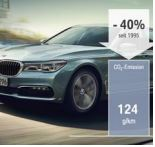
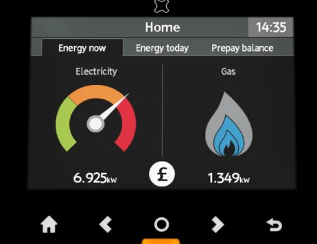

IB Docs (2) Team
IB Docs (2) Team

Unit 2.4(1): Behavioural economics (HL)

Behavioural economics considers consumer behaviour in a more complex way than classical economic theory. It introduces human psychology into the buyer decision-making process and considers how factors other than utility maximisation might affect whether someone buys a good or not. This is a new topic in the Economics syllabus and it introduces some really exciting ideas on economic thought.

- Rational consumer choice
- Assumptions of consumer rationality, utility maximization and perfect information
- Limitations of the assumptions of rational consumer choice
- Biases: rule of thumb, anchoring and framing
- Bounded: rationality, self-control, selfishness
- Imperfect information
- Choice architecture
- Nudge theory
Revision material
 The link to the attached pdf is revision material from Unit 2.4(1): Behavioural economics (HL). The revision material can be downloaded as a student handout.
The link to the attached pdf is revision material from Unit 2.4(1): Behavioural economics (HL). The revision material can be downloaded as a student handout.
Rational consumer choice
Behavioural economics considers consumer behaviour in a more complex way than classical economic theory. It introduces human psychology into the buyer decision-making process and considers how factors other than utility maximisation might affect whether someone buys a good or not. If, for example, you are going to the cinema you might not choose the film you think would give you the most utility. If you are with friends you may go to the film they want to watch to keep them happy, or you go to a film starring a particular actor out of habit even though you do not think the film will be that good. You might also be influenced by imperfect information about the film from a misleading '5-star' rating on the film's promotional poster which draws you to a film that is not as good as you think it will be.
Biases
Biases are the factors that influence individuals in decision-making situations and take them away from rational judgments. Herbert Simon (1916-2001) was a behavioural economist who believed that individuals who are confronted by complicated decision-making situations resort to heuristics. Heuristics simplify decision-making when individuals cannot work out the option that will give them the greatest utility. In buying situations people use mental shortcuts that allow them to make decisions in the time frame they are normally faced with. For example, when you are at the cinema you probably will not spend an hour researching all the films on offer, but spend a few minutes before deciding to watch the ‘crime thriller’ you know you would normally enjoy.
Rule of thumb
This approach to decision-making in Economics is based on the belief people make quick judgments (heuristics) based on what they normally consider to be an expected outcome. When, for example, a person is in a Thai restaurant they might choose their favoured spicy option rather than base their decision on the expected utility of each item on the menu. By using a rule of thumb individuals are not making decisions based on perfect information so they are trying to optimise their utility from consumption rather than maximising their utility. By understanding how consumers use a rule of thumb when they are making buying decisions firms can make marketing decisions to increase their revenues. For example, a restaurant might anticipate what will be the most popular items chosen from their menu based on the way their customer's usual (rule of thumb) choices and make sure they produce enough of those items to meet anticipated demand.
Anchoring bias
Anchoring bias is a reference point in an individual’s mind based on the first piece of information an individual experiences and it strongly influences a decision they make. Anchoring is another aspect of how bias affects decision-making in behavioural Economics.
Anchoring bias comes from a series of past experiences and it can even be formed in the mind of a consumer from their first experience of buying a good. When Apple first launched the iPad it was reported that the company would set a price of $999, but the actual launch price was $499. With a $999 'anchored' in the mind of potential consumers the $499 was a relatively attractive price and may well have led to higher initial sales than if the first reported price was $499.
Businesses can use anchor prices in the mind of consumers to increase sales. For example, an electrical retailer might promote the normal price for a laptop computer at $500 and then discount it by 40 per cent to a price of $300. It is a $300 computer but the anchor in the mind of the consumer at $500 and this makes them feel like they have got a good deal and they are more likely to buy the laptop. When individuals are buying personal computers, cups of coffee or cans of soft drinks, etc, the firms selling these products will build anchoring by consumers into the way they market these goods.
It is interesting to think about someone's first experience of Champagne as a good. For most people, their image of what this product means to them will have been formed years before they ever get to drink it. The word Champagne carries many positive images of celebration, good times and wonderful moments. It is also a name that represents quality and luxury in a person's mind. But Champagne is also a recreational drug and it, along with other alcoholic drinks, will have ruined many people's lives. Champagne could be viewed as a good whose positive image is fixed in the minds of many consumers.
Buyers of sparkling wines will be drawn to champagne and will expect to pay a high price based on their biases. If, for example, a champagne buyer enters a wine store and sees the price of a leading brand of Champagne at $50 then this will be the anchor price they will use to judge the value of the other brands on offer. If the buyer sees another brand at $30 they might judge this as good value based on their price anchor.
 Worksheet questions
Worksheet questions
Questions
a. Define the term biases. [2]
Biases are the factors that influence individuals in decision-making situations and take them away from rational judgments.
b. Explain how biases might affect a buying decision a person might make when they are choosing Champagne. [4]
When someone is buying Champagne their bias towards the good might lead them to pay a relatively high price. If the price of the brand of Champagne is below a certain level it might not reflect the quality a buyer would expect and the buyer might choose not to buy that brand. When a buyer is choosing between two sparkling wines of the same price and one is Champagne and the other is not they might choose Champagne because the high-quality image of Champagne is a bias in the mind of the consumer.
c. Explain how anchoring bias might affect the price retailers charge for Champagne. [4]
Anchoring bias is a reference point in the mind of a champagne buyer based on the first piece of information they receive about a good. Anchoring bias influences the price consumers are willing to pay for a good. If buyers equate the $50 price they first see in the store then this will influence the price they are willing to pay for different brands of champagne.
Investigation
Think about a good or service you buy and discuss with other people in your class how your buying decision might be affected by biases.
Framing bias
Framing bias is the way decisions made by individuals are affected by the way choices are presented to them. The important aspect of framing is the way information is presented in terms of the content of information and the use of language. In a supermarket, for example, you are faced with a low-fat chocolate mousse. The packaging could highlight, ‘20% fat’ or ‘80% fat-free’. Research shows that most people will be attracted by the ‘fat-free’ label even though both options offer the same product. Framing is another example of behavioural bias. In this case, people may well see the benefit of losing 80 percent fat as more attractive than gaining 20 percent from buying the mousse. Research shows that framing something in positive terms is more attractive to consumers than in negative terms. Retailers often frame the word ‘free’ in marketing (buy one get one free, 40% extra free, etc) because it attracts consumers.
Camp

bell Soup Company is a multi-national food company based in the US. It’s a big business with annual sales of $8.1 billion. Promoting its products effectively is a key element of increasing demand for its products. The ‘98% fat-free’ claim for its mushroom soup is a strong message for consumers looking for low-fat soup. It is worth thinking about the attractiveness of ’98% fat-free’ compared to ‘2% fat’. The word ‘free’ is a very powerful phrase in marketing and its psychological power in the mind of consumers. Some marketing professionals say the strength of the word ‘free’ in the mind of the buyer is that you are giving something to the consumer. In Campbell's case, the business could be seen to be 'giving' something to the consumer by offering 98 percent of the product without any fat. Worksheet questions
Questions
a. Define the term framing bias. [2]
Framing bias is the way decisions made by individuals are affected by the way choices are presented to them.
b. Explain how Campbell's soup has chosen to frame their product as ‘98% fat-free’. [4]
By presenting their soup as ‘98% fat-free’ Campbell's soup is framing their product in a positive way to consumers as a healthy good. Consumers are psychologically attracted by the word 'free' and 98% sounds very attractive in terms of what the consumers receive from the product. ‘98% fat-free’ is more attractive to the buyer than '2% fat'. By using framing bias in this way Campbell's hopes to sell more soup.
Investigation
Get people in your class to find some similar framing examples and discuss how effective they might be in increasing consumer demand.
Availability bias
Availability bias considers how individual decision-making is affected by information that comes easily into our minds. This information is often based on our experience of recent events and how the outcomes of these recent events affect our decision-making. In many situations, our exposure to events distorts our view of the world and has too much influence on the decisions we make. For example, you are thinking of buying a train ticket and the probability of being delayed is 20 percent. You have made several train journeys over the last year and you have not been delayed once so expect a good journey so you are more likely to book a train ticket. If, on the other hand, you have experienced several trips where delays have occurred then you might expect a delay on your next trip and be less likely to buy a ticket. In both cases, the probability of a delay is 20 percent but your decision to travel by train is likely to be influenced by your recent experience. Lottery ticket businesses, for example, will emphasise past winners when promoting tickets to consumers to make them think there is a better chance of winning than there actually is.
Rationality
Rational behaviour by individuals underpins much of traditional economic theory. Behavioural economists see this assumption as too simplistic, so they have developed alternative theories of rationality.
Bounded rationality
Bounded rationality is based on the theory that individuals make a decision that offers them a ‘good enough’ outcome rather than an ‘optimal’ or utility maximising outcome. The theory sees people as satisfiers, people who seek a satisfactory or acceptable outcome. If someone, for example, is in a fast-food restaurant like Macdonald’s they do not research their choice by asking other diners in the restaurant or by reading numerous online reviews, they might make a quick choice on what looks appealing and what they have eaten before. Consumers face three challenges when they are trying to make rational decisions in buying situations:
- Consumers might have limited time to assess all the possible options when they are choosing a good. For example, when someone is rushing to buy a drink in a coffee shop in their break.
- If there are too many choices on offer for the consumer they might opt for the most familiar option such as choosing a certain brand of biscuits in a supermarket.
- A lack of information may also lead consumers to buy a product they know about rather than spending time researching alternatives. For example, when someone is choosing a novel to read they might choose the author they are familiar with rather than finding about a book by an author they do not know.
Bounded self-control
Bounded self-control is where individuals consume beyond the point where they maximise their utility when consuming a good. Utility theory predicts consumers will consume a good to a point where their total utility is maximised. There is, however, lots of evidence to show that consumers might not stop consuming a good even if it makes sense to do so. People, for example, might binge eat fast food beyond the point where they are still enjoying it.
Online gambling firms often see their customers betting beyond the level they can afford. People often think in terms of current satisfaction when they are making buying decisions and do not consider the long-term implications of current consumption and how this might adversely affect their health and finances. A person might consume alcohol for the utility it gives them in present and ignore the future health consequences.
Bounded self-control can be important to governments when they are trying to regulate the consumption of certain goods. For example, a government policy to try and reduce the consumption of 'fatty' food may need to account for bounded self-control.
The value of the UK gaming market is a growing industry and worth nearly £15 billion a year. The market ranges from online casinos and sports betting websites to betting shops and slot machines. Whilst it is a business that brings participants great enjoyment and satisfaction it also brings with it considerable hardship and mental health problems to those who are addicted.
There are some instances where you wonder how rational gambling is:
- People who play fruit machines where the long-term player is guaranteed to lose 30% of all the money they put in.
- Gamblers do not bet on number 13 when playing roulette because it is seen as unlucky even though it has the same odds of winning as any other number on the table.
- Individuals who keep betting until they lose all their money even though they cannot afford to lose the money.
- Those who bet on horses when the jockey is wearing red even though the horse has little chance of winning.
Classical economic theory assumes that people will always make rational decisions that maximise their utility, but the gaming industry raises important questions about this assumption.
Worksheet questions
Questions
a. Define the term bounded rationality. [2]
Bounded rationality is based on the theory that individuals make a decision that offers them a ‘good enough’ outcome rather than an ‘optimal’ or utility maximising outcome.
b. Outline an example of people who gamble acting irrationally. [2]
An example could be people choosing a horse in a race that has a 'lucky' colour even though the probability is that the horse will not win.
c. Explain how bounded self-control might be an issue in the gaming market. [4]
Bounded self-control is where individuals consume beyond the point where they maximise their utility when consuming a good. When someone is betting they may gamble beyond the point of maximised utility because they have a gambling addiction. This can cause significant welfare costs amongst consumers in the gaming market.
Investigation
Research into another market where consumers are affected by bounded rationality.
Bounded selfishness
Bounded selfishness means individuals make decisions that benefit other people as well as themselves. Classical economic theory considers individuals to be concerned with their own welfare and satisfaction and not others. If people make choices to achieve the highest utility for themselves, there approach is a selfish one. Behavioural economists see this as a simplistic assumption because people often act with the welfare of others in mind. When, for example, a group of people is deciding on a restaurant for the evening, some individuals within the group may well accept the choice of others to make the whole group happy with the choice. Bounded selfishness is important for charitable organisations that rely on people acting in the interests of others rather than themselves. This can also be true when consumers buy fair trade products and pay a higher price for a good knowing it will benefit a fair trade producer.
Imperfect information
When individuals make decisions, traditional economic theory assumes their decisions are made using perfect information. This means people buy goods and services and know what they are buying, and they can make an informed buying decision based on this. When, for example, you buy a loaf of bread for $1 you understand the nature of the good and the benefits it will bring to you. The $1 you pay reflects the money value of the utility you believe you will get from consuming the bread. People are, however, often in situations where they do not understand or know enough about the product they are buying and are therefore unable to put an informed valuation on the good. This is particularly the case in markets where products are very technical and difficult for uninformed consumers to understand.
Computer virus software, for example, is difficult for buyers with a basic knowledge of computers to make an informed buying decision. A person may end up paying $100 for software that may not be worth that price. The products sold by the financial services industry such as pensions are often seen as services that people buy based on imperfect information.
Behavioural economics in action
Choice architecture
Choice architecture is where a business sets the layout, sequence, and range of choices available to a consumer in a particular way to encourage them to make a buying decision. Behavioural economists, Richard Thaler and Cass Sunstein, researched how decision-making by individuals is influenced by the environment where a decision is taken. This environment is known as choice architecture and the person who designs the environment is known as a choice architect.
Supermarkets, for example, are laid out to affect your buying decisions. Milk, for example, is often put at the back of the shop to make you walk through the store where you might make impulse purchases of other goods. The supermarket might also group complementary goods such as soft drinks and crisps together so you buy both goods. Another example is where shops put confectionery by the checkout might get you to buy a packet of sweets while you are waiting to be served.
Making your way around an Ikea store can certainly leave you a little tired and disorientated. An Ikea shop is designed to take you around each item of furniture and homeware they have on offer - elements of choice architecture. When you finally arrive at the cafeteria you will experience a subtle change to the layout of the food that might make you buy a little more than would otherwise be the case. In a two or three-course meal many people will choose not to have a dessert. Ikea put the dessert choices at the start of the cafeteria line because you are more likely to put a dessert on an empty tray than one which has a starter and main course already on it. One way of 'nudging' people to buy a dessert and increase their revenues.
Worksheet questions
Questions
a. Define the term choice architecture. [2]
Choice architecture is where a business sets the layout, sequence, and range of choices available to a consumer in a particular way to encourage them to make a buying decision.
b. Explain two ways Ikea uses choice architecture in its store layout to increase its revenues. [4]
- Ikea arranges its stores so that buyers have to pass every department in one of their shops. This encourages buyers to consider more items to purchase than just the items they came to the store to buy.
- In their cafeterias Ikea puts desserts as the first choice in the restaurant because buyers are more likely to buy a dessert as the first item rather than the last item.
c. Explain why Ikea groups complementary goods close together in their shops. [4]
Ikea would put complementary goods close together in its stores because selling one item means selling more of another and this can increase Ikea's sales revenue. It can do this, for example, by putting table lamps in the table section of a store.
Investigation
Research into the ways other retailers use choice architecture to try and affect consumer behaviour.
Default choices
In this theory of behavioural economics, the default choice is the option the consumer selects as their normal course of action. This could be the brand of soft drink you always buy, the destination you always go to on holiday, or the news website you always use. The choice is normally the easiest one for the consumer and requires the least effort. Research shows consumers rarely change their default option and opt for an alternative. Choosing the default option in a decision-making situation strongly affects consumer behaviour.

Insurance companies often send out the details of a car insurance policy to existing customers before they have decided to renew their insurance. They often say someone's policy will continue next year if they ‘do nothing’. This is probably the easiest option for the consumer and the one many people decide to take. This default choice means an insurance company can more easily sell policies by offering customers automatic renewal. Insurance companies often increase the price of their car insurance for people who automatically renew their policy.
Restricted choices
Restricted choice is based on the theory of bounded rationality. If buyers are faced with too many choices they struggle to make buying decisions because they do not have the time to work their way through too many alternatives. This means it is easier for businesses to sell to consumers if they offer them a limited number of choices. For example, a retailer selling computer software to nonspecialist buyers might offer their customers a limited choice of software to make the buying decision easier for buyers. This also means the retailer can carry a narrower range of stock which reduces their costs.
Mandated choices
A mandated choice is one where the consumer is forced by law to choose an option before they take part in an activity. Mandated choices are important in aspects of government policy where the state wants people to decide on something. In the case of pensions, for example, people find it difficult to assess the benefits of a pension because they may not think about the long-term advantages of a pension and they also find the financial products associated with pensions difficult to understand. For this reason, governments in many countries force workers to choose a pension scheme from a set of alternatives.
Nudge theory
Nudge theory is an area of behavioural economics developed by the Economists, Richard Thaler and Cass Sunstien in their book ‘Nudge’. Thaler won the Nobel Prize in Economics in 2017 for his work in this area. Nudge theory means using choice architecture (the way choices are presented to individuals) to encourage people to make decisions that will improve their own welfare and society’s welfare.
A ‘nudge’ means changing any part of the choice environment an individual faces to affect their behaviour by making small alternations to the factors that affect their decisions. In the book Nudge, Thaler and Sunstien set out several examples of how nudge theory can be applied in different situations to solve economic problems. Here are three examples:
The obesity problem
Obesity is a major health problem in many countries. A major cause of this is how much people eat. Growth in portion sizes and the calorific content of food and drink has been an important contributing factor in causing people to put weight on. Obesity is associated with significant economic costs such as higher government spending on healthcare and reduced labour productivity at work. Tackling obesity is a problem for individuals. Low-fat diets, fitness programmes, and weight-loss drugs are some examples of how people try to reduce their weight. In the book, ‘Nudge’ Thaler and Sunstien put forward an alternative approach. They suggest people are creatures of habit and will unthinkingly do what they always do.

For example, if people go to the cinema, they will always eat all the popcorn in the bucket they buy whether they are enjoying the remaining popcorn at the bottom of the bucket or not.The book also looks at an example of people consuming soup in an experiment where their soup bowls are automatically (unknowingly to the people in the experiment) re-filled. In the experiment, people kept on eating the soup beyond the amount they would normally consume because of a habit of consuming everything on their plate. The popcorn and soup examples show how out of habit people eat and drink what is put in front of them.
The Nudge Theory approach to losing weight would be for people to buy smaller plates, reduce the quantity of food they buy and ‘keep less in the fridge’. This approach might be a useful guide for governments looking to promote weight loss in society.
Saving money
Saving for retirement is an important decision for individuals and governments. People need to have enough money to live on when they finish work so they can enjoy a certain standard of living. Saving for retirement is also important for governments that might have to support people who have not saved enough through the transfer payments the government will have to pay them.
The economic problem of saving for retirement is that people tend not to save enough. Retirement is often seen as a distant point in the future for many people and they would rather enjoy a higher standard of living in the present than save for the future. Many employers set up retirement schemes where people can choose to save money in the scheme which often has some tax advantages. Employers will also top up an individual’s pension contribution with extra payments. This is a significant benefit for employees, but people often choose not to enrol in the pension scheme.
In the book, ‘Nudge’ Thaler and Sunstein advocate an opt-out scheme rather than an opt-in scheme for pension contributions. In the opt-out scheme, someone who gets a job is automatically enrolled in the pension scheme and has to choose to not make payments. The ‘nudge’ associated with changing from opt-in to out-out works because people no longer have to ‘act’ to be in the pension scheme – it is easier for them to stay part of the pension scheme when they start work. To opt-out people are also more likely to look at the pension scheme arrangements and then make a more informed judgment about its benefits. The change from opt-out to opt-in can have an important effect on government pension scheme design when they are trying to encourage more people to save for their retirement.
Reducing carbon emissions
Cli

mate change is one of the world’s most significant problems. Governments use a variety of different approaches to climate change through policies such as tax, regulation, and tradeable permits. A nudge theory approach to reducing carbon emissions would be a method that uses small changes to the choice environment that create incentives for firms and households to make decisions that encouraged them to cut their carbon emissions.A government could apply a ‘nudge’ by making firms sign up for a Greenhouse Gas Inventory where businesses have to report the amount of carbon they emit into the atmosphere. If this information is widely available to the public then companies that are the largest emitters would have an incentive to act. Being high up in the inventory league table would attract media attention and would bring bad publicity. Consumers may also choose to buy from firms who performed well in the inventory league table which would put even more pressure on the big polluters.
The Greenhouse Gas Inventory would be a low-cost policy decision by the government to ‘nudge’ producers to reduce carbon emissions through a published league table. These examples of how nudge theory can be applied are useful to individuals, businesses, and governments in terms of making decisions about increasing a person’s welfare and overall welfare in society.

Many households now have access to energy meters that tell people how much energy they are using on a digital meter in their house. Giving people information on how much energy they are using helps them use energy more efficiently which saves them money. By also providing households with information about how much they can reduce their carbon emissions through their energy meter people can be incentivised to use energy more sustainably.Research other nudge approaches that have been used to make resource use more sustainable.
Which of the following influences individuals in decision making situations and takes them away from rational judgments?
Biases are used to explain irrational behaviour by consumers.
Which of the following is an example of anchoring in terms of consumer behaviour?
Anchoring is where the consumer base their price decision on the first price they see.
Which of the following is not an example of bounded rationality?
Bounded rationality means consumers take shortcuts in their buying decisions and would do little research.
Which of the following best describes a situation where an individual’s buying decisions are affected by the layout, sequence, and range of outcomes available.
Which of the following is an example of nudge theory?
Nudges are small changes made by businesses to a selling situation to attract consumers.
A business that sells a film streaming service with an annual subscription payment sends a letter to its customers telling them their subscription payment will automatically continue if they ‘do nothing’. Which of the following best describes this method of selling by the business?
This is a default choice because it is the option that is easiest for the consumer.
How could Nudge Theory be used by the government to reduce carbon emissions?
Which of the following is a situation where an insurance company automatically rolls over an individual insurance premium to the following year?
 Twitter
Twitter
 Facebook
Facebook
 LinkedIn
LinkedIn